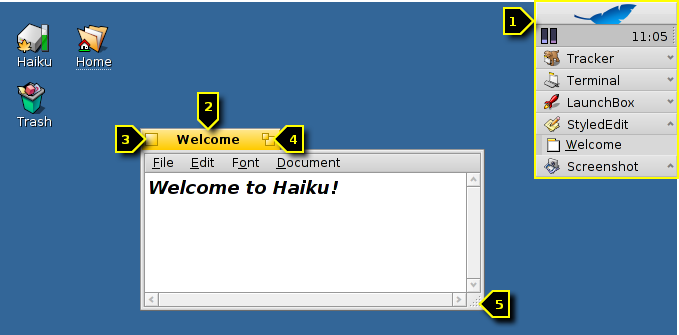
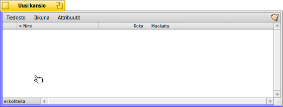
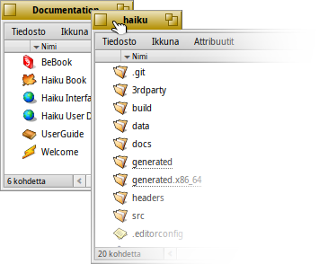
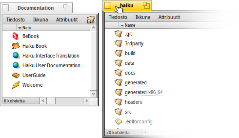
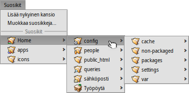

| Hakemisto |
|
Helppo siirtäminen ja koon muuttaminen Pinoa ja laatoita Avaus- ja tallentamispaneelit Kopiot |
Haikun graafinen käyttöliittymä
Haikun graafinen käyttöliittymä on järjestelmän kiinteä osa. Toisin kuin Unix-perustaisissa järjestelmissä, Haikussa ei ole mitään erillistä ikkunahallintaa eikä käynnistys vain komentorivikuoreen ei ole mahdollista. Haiku kohdistuu työpöytäkäyttäjiin, ja komentorivikuoreen käynnistymistä ei ole katsottu tarpeelliseksi.
Koska sinulla on luultavasti kokemuksia muista graafisista ympäristöistä, hypätään standardien, kuten valikoiden, hiiren kakkospainikkeella näkyviin saatavan asiayhteysvalikon, vedä ja raahaa -toiminnon jne. ylitse. Tutustutaan sen sijaan muutamaan Haikun ainutlaatuiseen puoleen.
Haikun graafisessa käyttöliittymässä on vain muutamia asioita, jotka eivät ole itsestään selviä ja ansaitsevat selityksen.
Työpöytäpalkki on Haikun "Käynnistä"-valikko ja tehtäväpalkki, jos niin haluat. Katso aihetta Työpöytäpalkki.
- Keltainen välilehti tarjoaa muutakin kuin vain ohjelman nimen tai asiakirjan tiedostonimen:
- Voit siirtää ikkunaa pitämällä VAIHTO-näppäimen alhaalla raahatessasi ikkunaa toiseen paikkaan, mikä ottaa myös käyttöön useiden ikkunoiden pinoamisen ja pääset kätevästi käsiksi niihin niiden nimetyn välilehden kautta.
- Muutat ikkunan minimikokoiseksi kaksoisnapsauttamalla sen välilehteä (tai CTRL ALT M -näppäimillä). Piilotettu ikkuna voidaan kutsua valitsemalla sen valikkorivi Työpöytäpalkissa tai Vaihtaja-ohjelmassa.
- Voit lähettää ikkunan taustalle napsauttamalla sen välilehteä (tai sen reunaa) hiiren kakkospainikkeella.
Sulje-painike.
Laajentamispainike (tai CTRL ALT Z). Useimmissa sovelluksissa se laajentaa ikkunan maksimikokoon pimentämättä Työpöytäpalkkia (pidä alhaalla painiketta VAIHTO, jos haluat kattaa myös Työpöytäpalkin). Sen ei kuitenkaan tarvitse tehdä sitä. Seuraaja-ikkunat esimerkiksi muuttavat kokoaan parhaiten sisältöön sopivaan kokoon.
Ikkunan reuna. Raahaaminen hiiren vasemmalla painikkeella siirtää ikkunan, raahaaminen hiiren kakkospainikkeella muuttaa ikkunan kokoa.
Koon muuttamiskulma.
 Nopea tapa siirtää tai muuttaa ikkunan kokoa
Nopea tapa siirtää tai muuttaa ikkunan kokoa
Ikkunoiden siirtäminen ja koon muuttaminen on laaja osa vuorovaikutuksesta useiden samanaikaisesti suoritettavien sovellusten välillä. Sen sijaan, että yritettäisiin osua pieneen keltaiseen otsikkovälilehteen tai vielä ohuempaan reunaviivaan, ikkunoiden siirtämiseksi on kätevämpi tapa. Koon muuttamisnurkalla on pienen koon lisäksi myös toinen rajoitus. Se sallii koon muuttamisen vain oikean alakulman suuntaan ja siitä keskustaan päin.
Raahaaminen hiiren kakkospainikkeella toimii, mutta sinun on tähdättävä huolellisesti.
Näiden asioiden ratkaisemiseksi Haiku tarjoaa näppärän ratkaisun ikkunahallintaan käyttämällä näppäinyhdistelmää CTRL ALT ja hiirtä. Katso myös ikkunahallintaan liittyviä lisätietoja kappaleesta Pikanäppäimet ja näppäinyhdistelmät.
Pitämällä alhaalla näppäimiä CTRL ALT korostetaan ikkunareuna, joka sijaitsee lähimpänä hiiren kohdistinta. Siirrä hiirtä toiseen suuntaan ja toinen raja vaihtuu kohteeksi. Napsauttamalla ja raahaamalla hiiren kakkospainikkeella voit muuttaa ikkunan kokoa korostetun reunan kohdalta.
Pidä alhaalla näppäimiä CTRL ALT ja napsauta sekä raahaa hiiren ykköspainikkeella kaikkialle ja ikkuna siirtyy mukana. Nopea napsautus hiiren kakkospainikkeella lähettää sen takaisin.
Pino ja laatoitus
Haikun käyttöliittymä tarjoaa ainutlaatuisia ominaisuuksia, jotka painottavat, että ikkkunoissa on käytön parantamiseksi keltainen välilehti eikä täysilevyinen otsikkopalkki. Sitä kutsutaan nimellä "Pino ja laatoitus".
Alla olevassa esimerkissä kirjanmerkin sisältävä Seuraaja-ikkuna on laatoitettu WebPositive-ikkunan viereen, mikä itse on pinottu toisen lähdekansion haiku näyttävän Seuraajaikkunan kanssa. Tässä animaatiossa käyttäjä napsauttaa pinoikkunan välilehtiä tuoden ne vuorotellen etualalle.
Tällä tavalla yhdistetty ikkunoiden ryhmää voidaan siirtää ja sen kokoa voidaan muuttaa yhdessä - näppärä järjestely työskenneltäessä hankekeskeisemmässä ympäristössä. Oikean selainikkunan etsimisen sijasta dokumentaatio, editori ja seuraajaikkunat ja ehkä hankkeeseen liittyvät sähköpostiviestit voidaan vain pinota ja laatoittaa yhteen.
Ikkunoiden todellisen järjestelyn tekeminen on helppoa. Pidä alhaalla Alt Gr/OPT-näppäintä samalla kun raahaat ikkunaa välilehdestä toisen ikkunan välilehden tai reunan viereen, kunnes se korostuu ja vapauta sitten hiiren painike.
Pino ja laatoitus sisältää kaksi asiaan liittyvää osaa.
|  | "Pinoaminen" on ikkunoiden laittamista toistensa päälle, jolloin keltaiset välilehdet siirtyvät automaattisesti oikeaan paikkaan. |
|  | "Laatoittaminen" tarkoittaa ikkunoiden liimaamista vaakasuorassa tai pystysuorassa yhteen. |
Ikkunoiden erottaminen tehdään samalla tavalla, pitämällä Alt Gr/OPT-näppäin alhaalla samalla kun ikkuna vedetään välilehdestä kiinnipitäen pois ryhmästä.
Avataan ja tallennetaan paneeleja
Kun avataan tai tallennetaan tiedostoa mistä tahansa sovelluksesta, avautuu tämän näköinen paneeli:

Siinä on kaikki tavalliset asiat: Nykyisen kansion tiedostoluettelo, josta voi valita tiedoston, tiedoston tallennustapauksessa tekstikenttä tiedostonimen kirjoittamista varten ja ponnahdusvalikko eri tiedostomuotoja ja niiden asetuksia varten.
Voit siirtyä äitihakemistoon ponnahdusvalikosta tiedostoluettelon yläpuolelta.
Jos sinulla on jo Seuraaja-ikkuna tiedoston avaussijainnissa, voit yksinkertaisesti raahata minkä tahansa tiedoston tai kansio-esityksen (toisin sanoen symbolin valikkopalkin oikealla puolella) paneeliin. Tämä vaihtaa paneelin uuteen paikkaa.
Näppäimistön pikanäppäimet
Monet pikanäppäinmäärittelyt avaus- ja sulkemispaneelissa ovat samat kuin Seuraajassa käytetyt. Sitä paitsi komennoissa, jotka ovat myös käytettävissä -valikon kautta, on muutamia jotka eivät ole itsestäänselviä:
| ALT N | Luo uuden kansion. | |
| ALT E | Sallii sinun nimetä uudelleen valitun kohteen. | |
| ALT ↑ | Siirtää äitikansioon. | |
| ALT ↓ tai ENTER | Siirtää valittuun kansioon. | |
| ALT D | Siirtää sinut työpöydällesi. | |
| ALT H | Siirtää sinut kotikansioosi. |
Haikun pikanäppäimiin yleensä voi tutustua kappaleessa Pikanäppäimet ja näppäinyhdistelmät.
Suosikit ja äskeiset kansiot
-valikko avaus- ja sulkemispaneelissa tarjoaa äskettäin vieraillut kansiot ja suosikkisijainnit, jotka voit asettaa itse. Kuten pienellä nuolella ilmaistaan, voit käyttää myös näitä sijainteja navigoidaksesi kauemmas alaspäin alivalikkojen hierarkiassa.
Suosikin lisäämiseksi navigoit yksinkertaisesti haluamaasi kohteeseen ja valitset . Tästä alkaen se esiintyy jokaisessa avaus- ja tallentamispaneelissa. Suosikin poistamiseksi valitse ja poista haluamasi suosikkirivi.
Kaikki suosikit pidetään kansiossa /boot/home/config/settings/Tracker/Go/. Joten pystyisit myös lisäämään ja poistamaan linkkejä tiedostoihin ja kansioihin suoraan sieltä.
Kopiot
Kopiot ovat pieniä itsensä sisältäviä sovellusosia, jotka on integroitu toisiin sovelluksiin. Edellyttäen, että Seuraajan valitsin on aktivoitu, tunnistat sovelluksen kopio-osan pienestä kahvasta, joka on normaalisti oikeassa alakulmassa:

Huomioonherättävin paikka, joka hyväksyy kopiot on työpöytä. Yksinkertaisesti raahaat ja pudotat pienen kahvan sille. Siitä alkaen se on osa työpöytää ja sovellus, josta Kopio on lähtöisin, ei tarvitse käynnistyä toimiakseen.
Hiiren kakkospainikkeen painallus kopiokahvassa tarjoaa asiayhteysvalikon, joka näyttää alkuperäsovelluksen -ikkunan ja -valikon.
Esimerkkejä kopioitavista sovelluksista ovat Aktiviteettivalvonta-ohjelman graafit, Työtilat-sovelma tai Työpöytälaskin.